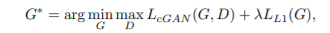

Efficient Active Learning for Image Classification and Segmentation using a Sample Selection and Conditional Generative Adversarial Network
简介
这篇文章声称提出了一种更先进的Active Learning的方法可以用在图像分割和分类问题中。然而，全文的重点放在了使用GAN生成fake sample上，对于如何选取fake sample去训练一带而过，感觉有点蹭热度的嫌疑。
introduction
一如既往的抨击之前的AL方法。
- 现有的AL方法生成的labeled sample太少了
- 在选取sample时使用了hand crafted features，和cnn的训练特征阈不同（吐槽，Cost-Effective Active Learning for Deep Image Classification了解一下?)
Methods
使用cGAN生成fake sample
他把GAN和cGAN的公式拿了过来凑字数。。。

为了使生成的图像与原图像不同，在训练时加上Lcontent项。
NMI表示normalized mutual information，表示互信息。这里倒是了解了一下图像之间的互信息求法。
传统的互信息定义为：
图像匹配中，可以使用直方图法来定义互信息（即在灰度上分块，然后统计图像出现个色块的频率，计算其entropy H(X)，根据公式，I(X,Y)=H(X)+H(Y)-H(X,Y)，得到互信息）
还有其他的互信息统计方法，包括参数估计，kernel估计等等。
VGG表示图像在feature space的L2差异。
MSG表示图像在pixel space的L2差异。
Bayesian Neural Networks
em…这里啥都没说，就列了个公式，强烈怀疑作者都没有看过这篇paper，只是随便拿来蹭热度了。
实现细节
- 用VGG16训练Imagenet数据集来做数据提取，然后用labeled sample去调整最后两层分类。
- 剩下的labeled sample扔进cGAN里生成sample，然后每个class挑16个放进sample pool里做训练。
- 迭代直到converge
总结
居然发表在MICCAI上。。。找时间看一下贝叶斯neural network吧。